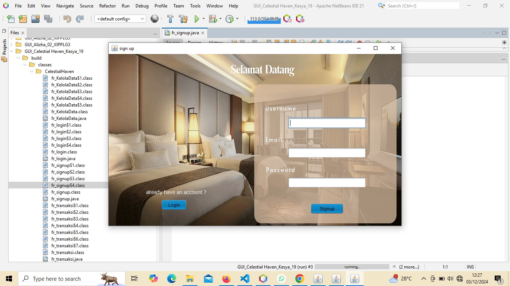
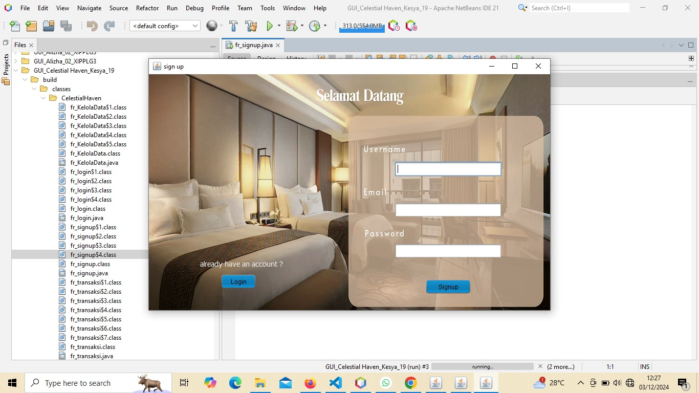

+62 877-3110-6249
kesyadwiandhini08@gmail.com
Kopen Rt.04 /Rw.04 Jatiroto, Wonogiri
NetBeans
C++
Visual Studio Code
Canva
Java
C++
HTML
KESYA DWI ANDHINI
Seorang remaja yang berusia 16 tahun dengan impian besar untuk menjadi wanita karir yang sukses. Dengan hobi menyanyi dan traveling, Saya menemukan keseimbangan antara ekspresi diri dan petualangan. Saya memanfaatkan waktu luangnya dengan mencari kesibukan yang bermanfaat, sekaligus memberikan waktu bagi dirinya untuk beristirahat. Saya percaya bahwa dedikasi dan pengelolaan waktu yang baik akan membawanya menuju kesuksesan dalam karir dan kehidupan pribadi.
2013 - 2014
TK Utami 4 Jatiroto
2014 - 2020
SD Negeri 2 Jatiroto
2020 - 2023
SMP Negeri 1 Jatiroto
2023 - 2026
SMK Negeri 1 Jatiroto
2024
Membuat Website Crud
Pembuatan aplikasi pemesanan kamar hotel.
2024
Membuat Website Landiding Page
Pembuatan website produk perusahaan.
Portofolio
 

Klik disini